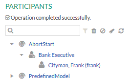
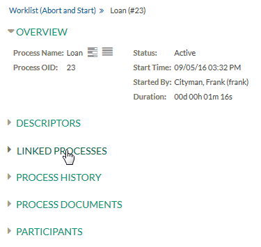

Figure: Upload Document
Figure: IRA - Process Attachment

Figure: IRA - Abort Process and Start
The Abort Process and Start dialog is displayed.
Figure: Abort Process and Start
Figure: Abort Process and Start Confirmation
This tutorial describes how to abort an existing process instance and start another process instance. Then we check whether the documents attached to the source process instance are copied in the target process instance.
In an organization, process instances are started in the incorrect process definitions. This resulted into manual download and upload of the documents. So, the organization has requested an enhancement to the existing functionality. For detail scenario refer to the Common Usage Pattern section of the Aborting and Starting Processes chapter of the Concepts handbook.
For details on the abort and start functionality, refer to Aborting a Process and Starting a new Instance chapter of the End User Handbook.
This tutorial covers the following:
So, let's abort the IRA and the Loan process instances of the example model. After the abort and start operation we need to check if the document attached with the IRA process is copied to the Loan process.
Use the provided AbortStart example model which contains appropriate declarative security.
managing-unstructured-workflow:
Figure: IRA - Abort Process Instance
Figure: Process Supports Attachments - IRA
Perform the following steps to deploy the model and run the project in the Stardust Portal:

Figure: Participant - Role 1
Figure: Upload Document
Figure: IRA - Process Attachment
Figure: IRA - Abort Process and Start
The Abort Process and Start dialog is displayed.
Figure: Abort Process and Start
Figure: Abort Process and Start Confirmation
In the Worklist view, the newly started process Loan gets displayed.

Figure: Worklist View
To view the linking between the processes, perform the following steps:
Figure: Process Details - Loan

Figure: Linked Process with Target Process
The link to the source process instance is displayed.
Figure: Linked Process with Target Process - IRA
Figure: Linked Process - IRA
The process details of the source process IRA get displayed.
Figure: Linked Process with Source Process - Loan
Expand the Process Documents panel for the target process - Loan
Figure: Process Documents
The document from the source process instance IRA gets copied to the target process instance Loan.
For details on the Copy Data semantics, please refer the chapter Data Copy and Mapping Semantics of the Stardust Concepts handbook.

Figure: Attached Document to Target Process - Loan
Expand the Process History panel for target process - Loan
Figure: Process History - Loan
Note that in the process history of the target process Loan, details of the source process are not displayed.
Figure: Process History - Loan - Target Process
Similarly, if you open the process history of the source process IRA, the process history of the target process is not shown.